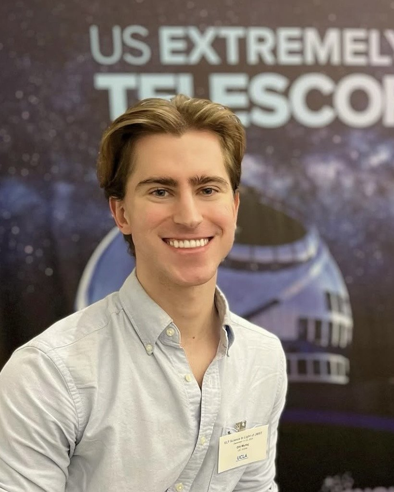

Olti Myrtaj
Computational astrophysicist at the University of California, Irvine
I research how galaxies form and evolve over cosmic time, combining advanced data from state-of-the-art numerical simulations and revolutionary space and ground-based observatories. With FIRE cosmological simulations, I have written an extensive biography of our home galaxy, the Milky Way, and how it evolved from an early, chaotic protogalaxy to the spinning disk we all know and love today.
About
I am a PhD candidate in Physics and Astronomy at UC Irvine, advised by James Bullock, and a member of the FIRE collaboration.
Surveys like Gaia and APOGEE show that the Milky Way formed in three kinematic phases: a chaotic protogalaxy, a thick disk, and a thin disk. I use FIRE-2 cosmological zoom-in simulations of Milky Way-mass galaxies to explore the physical nature and evolution of these phases in a cosmological context. In Myrtaj et al. (2026), accepted in MNRAS, I showed that simulated Milky Way-mass galaxies also exhibit the same three phases, and I explored the physics behind the transitions.
My current research pushes this framework in three broad directions: the dynamics that govern how galaxies acquire coherent rotation, the unexpectedly early disks that JWST and ALMA find in the early universe, and the chemokinematic signature of these phases in the Milky Way's stellar archaeology. Go to my research page to learn more!
I earned my B.S. in Physics, with a minor in Mathematics, from Virginia Tech in 2021, where I graduated as valedictorian. My workshops and mentoring through programs such as UC LEADS and SURF have jump-started the research careers of more than 100 undergraduates. Most recently, I co-organized GalFRESCA 2026, a regional galaxy-formation meeting at UC Irvine, hosting 60 presenters from 16 institutions.
Beyond research
Latest
-
2026
My paper on the evolution of the Milky Way in three kinematic phases has been accepted in MNRAS. Read it on arXiv.
-
Sep 2026
Co-organized GalFRESCA 2026 at UC Irvine, two days of galaxy-formation talks from across Southern California, and I personally presented my own research on the three-phase picture.
-
2026
Gave an invited talk in the CosmoLab seminar series at USC on the physics of how Milky Way-mass galaxies form their disks.
-
Jan 2026
A summer research project I supervised through UCI CAMP was presented as a poster at the AAS meeting.
-
Nov 2025
Served as a staff astronomer at the Night Sky Festival in Joshua Tree National Park.
-
Jun 2025
Presented the three phases of Milky Way evolution at AAS 246 in Anchorage.